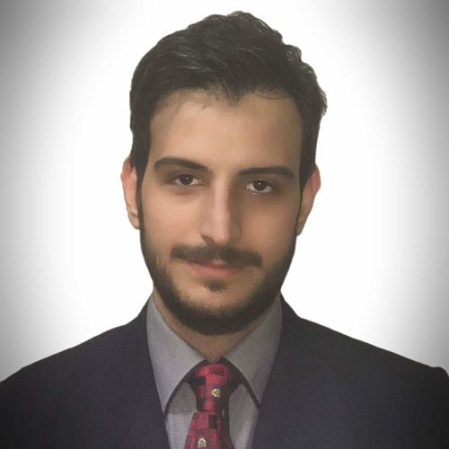

Rouein Fani
Mechatronic Engineer · Robotics
Experience
Jan. 2018 - Present
Istanbul, Turkey
Research & Development Engineer
Feb. 2016 - Dec. 2017
Istanbul, Turkey
Arjan Industry Co.
Research & Development Engineer
- Conducted computational fluid dynamics and experimental investigations.
- Recommended modifications following equipment test result.
- Oversaw finite element analysis of bearings, including stress and deformation analysis.
- Oversaw the user Interface program development
- Developed a lubrication system.
- Responsible for product development research and analysis.
- Troubleshoot and repair of developed systems.
Jul. 2015 - Aug. 2015
Istanbul, Turkey
Engineering Intern
- Developed and evaluated a theoretical design.
- Used computer aided design to analyze fluid mechanics.
- Modified equipment parts to increase reliability and reduce production costs.
- Tested reliability and consistency of the equipment in the given environment.
- Discussed and solved complex problems with manufacturing departments.
Jun. 2015 - Jul. 2015
Istanbul, Turkey
Engineering Intern
- Researched cost-effective equipment modifications to help improve safety and reliability.
- Produced details of specifications and outline designs.
- Tested newly installed equipment.
- Worked with other professionals, within and outside the engineering sector.
- Developed a project specification with colleagues.
Education
Sep. 2012 - Feb. 2016
Istanbul, Turkey
B.S. in Mechatronics Engineering
Jan. 2011 - Jun. 2012
Subang Jaya, Malaysia
Ontario Secondary School Diploma
Projects
Smart Home
Research & Development Engineer
- Designed an automated lighting system.
- Built a proof of concept using Arduino Mega.
- Conducted tests and optimized the program and the design.
- Oversaw development of the android application.
Ground-Powered Solar Thermal Rocket
CFD Analyst
- Modeled the exterior body via SolidWorks.
- Ran CFD analysis on the model using Ansys Fluent.
- Developed correlation for external aerodynamic simulation results with experimental data.
- Successfully optimized parameters of conceptual and detailed designs using ANSYS.
Kinect Controlled Robotic Arm
Capstone Project
- Designed a teleoperation system in which a robotic manipulator with 7 degrees of freedom imitated the motion of a human arm.
- Utilized KUKA LBR iiwa as the manipulator.
- Utilized Microsoft Kinect as the visual sensor.
- Calculated inverse kinematics and applied joint mapping algorithms using JAVA.
Remotely Operated Underwater Vehicle
CFD Analyst
- Modeled the ROV via SolidWorks.
- Performed full vehicle external aerodynamic simulations to optimize design of various components.
- Optimized the design based on the findings.
Automated Irrigation System
Mechatronic Engineer
- Designed the layout of the electronic system.
- Designed, modeled and 3D printed the casing.
- Utilized soil moisture sensors.
- Optimized the design to be cost-efficient.
- Produced a proof of concept using Arduino Mega.
TUBITAK’s Efficient Electric Automobiles Competition
ARABAU Engineering Team Member
- Designed and modeled the car chassis and exterior of the vehicle via Catia.
- Ran CFD analysis on the design utilizing Ansys Fluent and optimized it based on the findings.
- Manufactured the vehicle’s chasis and body.
Languages
- English - Proficient
- Persian - Native
- German - Elementary
- Arabic - Intermediate
- Turkish - Upper Intermediate